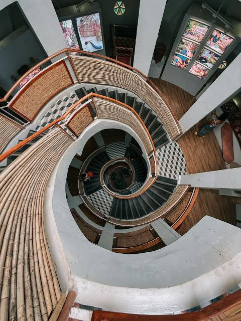

Bataraza local
Bataraza is a first-class coastal municipality located on the southernmost tip of Palawan Island, Philippines, approximately 218 to 225 kilometers south of Puerto Princesa City (a 5 to 6-hour land trip). Named after Datu Bataraza Narrazid, the town has a population of 85,439 based on the 2020 Census and is led by Mayor Al Shariff W. Ibba
THANKYOU! PLEASE CLICK THE PICTURE BELOW HEHE
